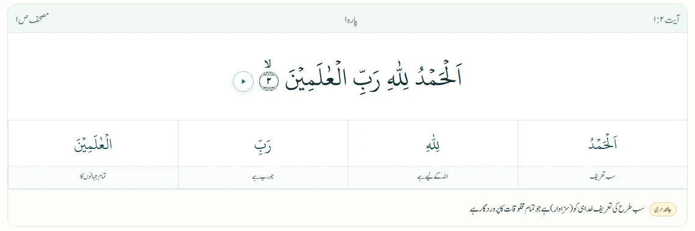
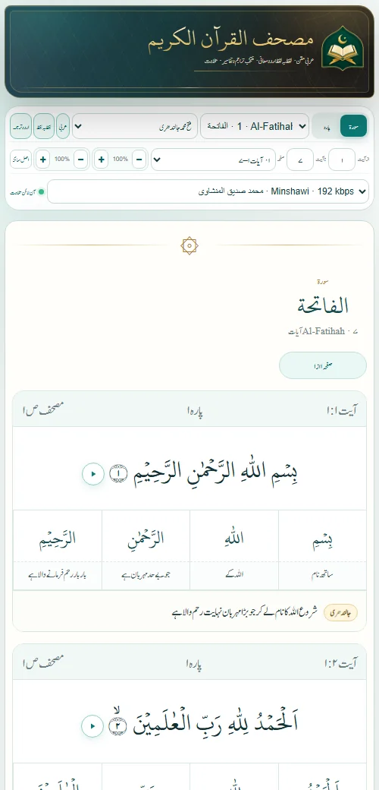

ہر لفظ کے نیچے اس کا مطلب
ہر آیت لفظ بہ لفظ ترتیب دی گئی ہے اور ہر عربی لفظ کے عین نیچے اس کا اردو مطلب درج ہے۔ نیچے مکمل ترجمہ پڑھیں، اور جب مزید گہرائی میں جانا ہو تو تفسیر کھول لیں۔
- پورے قرآن کے لفظ بہ لفظ اردو معانی
- ترجمہ یا تفسیر کسی بھی وقت تبدیل کریں
- عربی، لفظی معانی اور ترجمہ الگ الگ دکھائیں یا چھپائیں


ہر اسکرین پر یکساں آسان
مصحف آپ کی اسکرین کے مطابق خود کو ڈھال لیتا ہے۔ چھوٹے موبائل پر آیات، لفظی معانی اور بٹن خود بخود ترتیب بدل لیتے ہیں، کچھ کٹتا نہیں اور دائیں بائیں سرکانا نہیں پڑتا۔ بڑی اسکرین پر یہی صفحہ کشادہ ہو کر کھلتا ہے۔
- چھوٹے موبائل پر بھی اتنا ہی آسان جتنا کمپیوٹر پر
- بٹن اور مینو انگلی سے چلانے کے لیے موزوں
- عربی یا اردو کا سائز ایک ٹچ سے بڑا کریں
- تمام آلات کے لیے ایک ہی فائل
یکسوئی سے مطالعے کے لیے
نہ اشتہار، نہ نوٹیفکیشن، نہ اکاؤنٹ۔ صرف کتابِ الٰہی اور اسے سمجھنے کے ذرائع۔
مکمل عربی متن
تمام 114 سورتیں، مجمع الملک فہد، مدینہ منورہ کے متن سے آیت بہ آیت تصدیق شدہ۔
انٹرنیٹ کے بغیر
متن، معانی، تراجم، تفاسیر اور فونٹ سب فائل کے اندر ہیں۔ سفر میں ہوں یا گاؤں میں، کہیں بھی کھولیں۔
ہر اسکرین کے مطابق
مکمل ریسپانسیو۔ چھوٹے موبائل، ٹیبلٹ یا بڑی اسکرین، ہر جگہ یکساں سہولت سے پڑھا جاتا ہے۔
پڑھتے ہوئے سنیں
اپنی پسند کے قاری کی آواز میں کوئی بھی آیت سنیں، صفحات خود بخود آگے بڑھتے ہیں۔ دہرانے کے بٹن سے ایک ہی آیت بار بار سنیں، حفظ کے لیے بہترین۔ تلاوت کے لیے انٹرنیٹ درکار ہے۔
مطلوبہ مقام فوراً
سورۃ، پارہ یا مصحف کے صفحے کے لحاظ سے جائیں، یا مطالعے کے لیے آیات کی حد خود مقرر کریں۔
آرام دہ حروف
عربی اور اردو کا سائز الگ الگ بڑا یا چھوٹا کریں، اپنی نظر اور اسکرین کے مطابق۔
مکمل رازداری
نہ اکاؤنٹ، نہ اشتہار، نہ لاگ اِن۔ فائل آپ کے اپنے آلے پر چلتی ہے اور آپ سے کچھ نہیں مانگتی۔
جہاں چھوڑا وہیں سے
آپ کا مقام، منتخب ترجمہ، قاری اور حروف کا سائز یاد رہتا ہے، اگلی بار وہیں سے شروع کریں۔
صرف وہی جو درکار ہو
عربی متن، لفظ بہ لفظ معانی اور ترجمہ میں سے جو چاہیں دکھائیں: تلاوت کے لیے صرف عربی، مطالعے کے لیے سب کچھ۔
چودہ معتبر تراجم و تفاسیر، ایک ساتھ
وہ ترجمہ منتخب کریں جس سے آپ مانوس ہیں، یا ایک ہی آیت پر مختلف اہلِ علم کو ساتھ ساتھ پڑھیں۔
تراجم
- فتح محمد جالندھریFateh Muhammad Jalandhari
- کنزالایمانامام احمد رضا خانKanzul Iman
- ترجمان القرآنمولانا ابوالکلام آزادTarjuman-ul-Quran
- عرفان القرآنڈاکٹر طاہر القادریIrfan-ul-Quran
- تفہیم القرآنمولانا سید ابوالاعلیٰ مودودیTafheem-ul-Quran
- تفسیر احسن البیانمولانا محمد جوناگڑھیAhsan-ul-Bayan
- ترجمہعلامہ سید ذیشان حیدر جوادیJawadi
- آسان ترجمۂ قرآنمفتی محمد تقی عثمانیAasan Tarjuma
ترجمہ و تفسیر
- تفسیر عثمانیمولانا شبیر احمد عثمانیTafsir Usmani
- تفسیر ماجدیمولانا عبدالماجد دریابادیTafsir Majidi
- تفسیر جلالینامام محلی و امام سیوطیTafsir Jalalain
- تفسیر مظہریقاضی ثناء اللہ پانی پتیTafsir Mazhari
- تفسیر ابن کثیرحافظ ابن کثیرTafsir Ibn Kathir
- تفسیر قرطبیامام قرطبیTafsir Qurtubi
تین آسان قدم
ڈاؤن لوڈ کریں
بٹن دبائیں اور Mushaf.html اپنے کمپیوٹر یا موبائل میں محفوظ کر لیں۔
کھولیں
فائل کو Chrome، Edge، Safari یا Firefox میں کھولیں۔ کچھ انسٹال کرنے کی ضرورت نہیں۔
محفوظ رکھیں اور آگے بھیجیں
فائل آپ کے پاس رہتی ہے۔ یہی فائل واٹس ایپ، ای میل یا یو ایس بی سے گھر والوں کو بھیجیں۔
عام سوالات
کیا یہ واقعی مفت ہے؟
جی ہاں۔ نہ کوئی قیمت، نہ آزمائشی مدت، نہ اشتہار، نہ اکاؤنٹ۔ ڈاؤن لوڈ کریں، اپنے پاس رکھیں اور دوسروں تک پہنچائیں۔
کیا یہ موبائل فون پر چلتا ہے؟
جی ہاں۔ مصحف مکمل ریسپانسیو ہے، اس لیے چھوٹے موبائل، ٹیبلٹ اور بڑی اسکرین سب پر ترتیب خود درست ہو جاتی ہے۔ موبائل کے براؤزر میں آن لائن کھولیں، یا فائل ڈاؤن لوڈ کر کے کھول لیں۔
فائل 49 ایم بی کی کیوں ہے؟
کیونکہ سب کچھ اسی کے اندر ہے: مکمل عربی متن، لفظ بہ لفظ معانی، چودہ تراجم و تفاسیر اور فونٹ۔ اسی وجہ سے یہ انٹرنیٹ کے بغیر چلتا ہے۔
انٹرنیٹ کس چیز کے لیے درکار ہے؟
صرف تلاوت سننے کے لیے۔ متن، معانی، تراجم اور تفاسیر سب انٹرنیٹ کے بغیر دستیاب ہیں۔
کیا ڈاؤن لوڈ کیے بغیر استعمال ہو سکتا ہے؟
جی ہاں۔ آن لائن پڑھیں پر جائیں، مصحف براؤزر ہی میں کھل جائے گا۔ پہلی بار کھلنے میں کچھ وقت لگتا ہے کیونکہ پورا مصحف ایک ساتھ آتا ہے۔
کیا میں اسے دوسروں کو بھیج سکتا ہوں؟
ضرور۔ فائل خود بھیج دیں یا صرف getmushaf.com کا پتہ بتا دیں۔
اردو ترجمے کے ساتھ قرآن پاک، مفت ڈاؤن لوڈ
اگر آپ قرآن مجید اردو ترجمہ کے ساتھ، قرآن پاک لفظی ترجمہ، یا لفظ بہ لفظ اردو ترجمہ تلاش کر رہے ہیں تو یہ وہی ہے: مکمل قرآن کریم عربی متن میں، ہر لفظ کے اردو معنی اور ہر آیت کے نیچے مکمل اردو ترجمے کے ساتھ۔
اس میں وہ تراجم و تفاسیر یکجا ہیں جنہیں قارئین نام لے کر ڈھونڈتے ہیں: کنزالایمان، تفہیم القرآن، تفسیر ابن کثیر، تفسیر عثمانی، تفسیر ماجدی، تفسیر جلالین، تفسیر مظہری، تفسیر قرطبی، احسن البیان، عرفان القرآن، ترجمان القرآن اور مفتی تقی عثمانی کا آسان ترجمۂ قرآن۔ آن لائن پڑھیں، یا ایک بار ڈاؤن لوڈ کر کے ہمیشہ کے لیے آف لائن محفوظ کر لیں۔
قرآن کو اپنے قریب رکھیں
ایک بار ڈاؤن لوڈ کریں، پھر جہاں بھی جائیں یہ آپ کے ساتھ ہے، انٹرنیٹ ہو یا نہ ہو۔